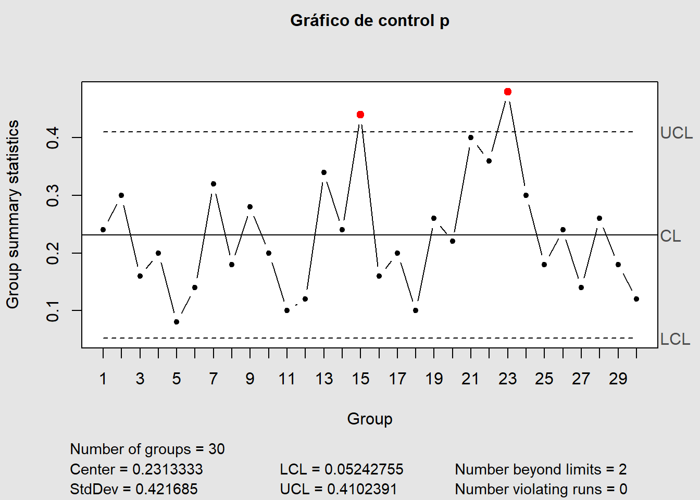
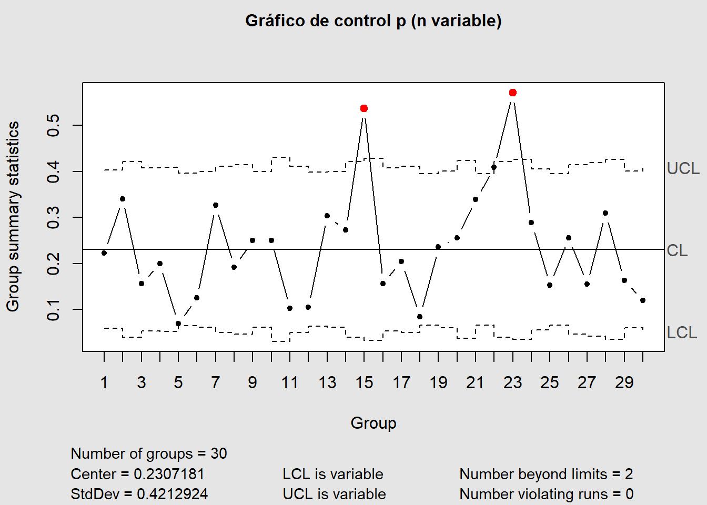
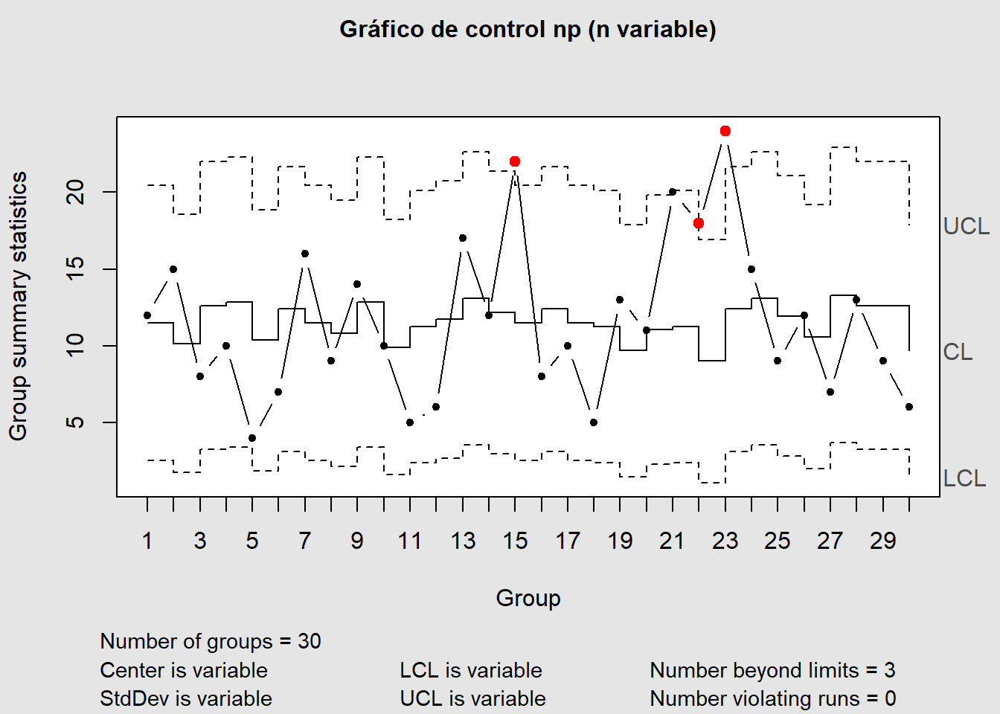
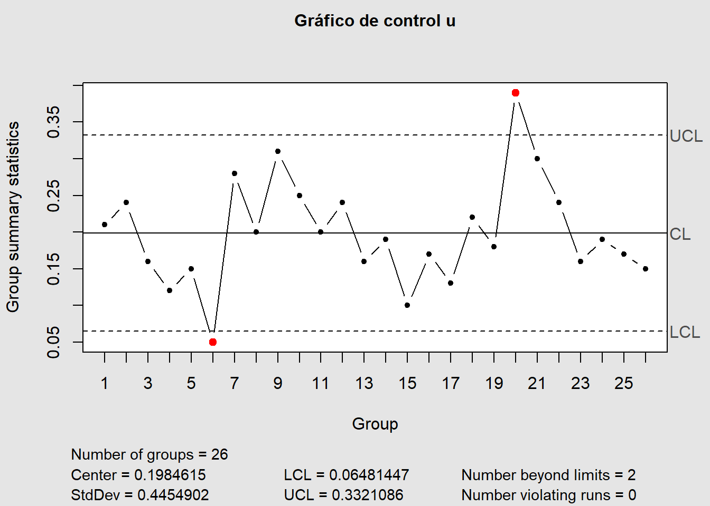
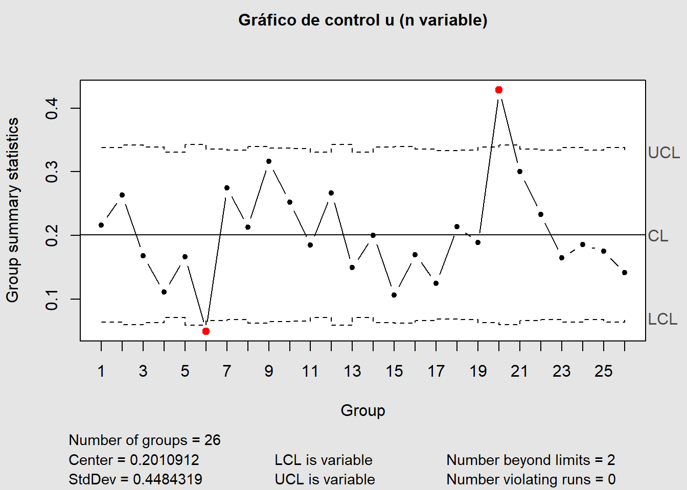

library(tidyverse)
library(qcc)Gráficos de control para atributos
Introducción
Mientras que los gráficos de control para variables rastrean las cantidades medidas relacionadas con la calidad de los resultados del proceso, los gráficos para atributos siguen el recuento de los elementos no conformes. Los gráficos para atributos no son tan informativos como los gráficos para variables para los estudios de la fase I. Un desplazamiento por encima o por debajo del límite de control inferior o una serie de puntos por encima o por debajo de la línea central en un gráfico de variables puede dar una pista sobre la causa. Sin embargo, un cambio en el número de elementos no conformes puede dar tal indicio. Aún así los gráficos de atributos tienen valor en la fase I.
En las industrias de servicios y otras áreas no manufactureras, los datos de conteo pueden ser abundantes pero las mediciones numéricas raras. Además, se pueden considerar simultáneamente muchas características de los resultados del proceso utilizando gráficos de atributos.

Librerías
Para no conformes (Defectuosos)
Gráfico \(p\)
A continuación se le presenta un ejemplo donde se han recogido \(n=50\) durante 30 periodos de tiempo.
data(orangejuice)
head(orangejuice)%>%
flextable::flextable()sample | D | size | trial |
|---|---|---|---|
1 | 12 | 50 | TRUE |
2 | 15 | 50 | TRUE |
3 | 8 | 50 | TRUE |
4 | 10 | 50 | TRUE |
5 | 4 | 50 | TRUE |
6 | 7 | 50 | TRUE |
tail(orangejuice)%>%
flextable::flextable()sample | D | size | trial |
|---|---|---|---|
49 | 6 | 50 | FALSE |
50 | 7 | 50 | FALSE |
51 | 5 | 50 | FALSE |
52 | 6 | 50 | FALSE |
53 | 3 | 50 | FALSE |
54 | 5 | 50 | FALSE |
Solo necesitamos, para el ejemplo, los primeros 30 datos (los de trial = TRUE).
datos <- orangejuice %>%
dplyr::filter(trial)Con este código podemos generar el gráfico.
p <- qcc(datos$D,
sizes = 50, type = "p",
title = "Gráfico de control p")
Si \(n\) es variable, supongamos que de esta manera (en un caso real, debe ingresar datos reales, estos son simulados):
n_var <- sample(40:60, # n, aleatorio, entre 40 y 60
30, # 30 datos
replace = TRUE)
n_var [1] 57 57 56 52 52 56 57 60 55 49 54 58 46 59 46 40 51 46 60 44 54 53 55 41 53
[26] 44 43 54 43 58Entonces
p <- qcc(datos$D,
sizes = n_var, type = "p",
title = "Gráfico de control p (n variable)")
Gráfico \(np\)
No hay muchas diferencias entre la generación del gráfico \(p\) y el \(np\), como podemos apreciar.
np <- qcc(datos$D,
sizes = 50, type = "np",
title = "Gráfico de control np")
Este también puede ser variable, pero no se recomienda y justo este gráfico a continuación es un prueba de ello.
np <- qcc(datos$D,
sizes = n_var, type = "np",
title = "Gráfico de control np (n variable)")
Para no conformidades (defectos)
Gráfico \(c\)
Para este ejemplo se va a emplear los siguientes datos
data("circuit")
head(circuit)%>%
flextable::flextable()x | size | trial |
|---|---|---|
21 | 100 | TRUE |
24 | 100 | TRUE |
16 | 100 | TRUE |
12 | 100 | TRUE |
15 | 100 | TRUE |
5 | 100 | TRUE |
Al igual que en los ejemplos de \(p\) y \(np\), solo necesitamos, para el ejemplo, los primeros 26 datos (los de trial = TRUE).
datos_circuito <- circuit %>%
dplyr::filter(trial)Una vez realizado este paso miscelaneo, se puede construir el gráfico de control \(c\)
c <- qcc(datos_circuito$x, type = "c",
title = "Gráfico de control c")
Para este gráfico tampoco se recomienda \(n\) variable.
Gráfico \(u\)
Empleando los datos anteriores, se construye el gráfico de la siguiente manera.
u <- qcc(datos_circuito$x,
sizes = 100, type = "u",
title = "Gráfico de control u")
En caso de tener \(n\) variable (simulado a partir de los siguientes datos).
n_var <- sample(90:110, 26, replace = T)Se puede obtener el gráfico de esta manera
u <- qcc(datos_circuito$x,
sizes = n_var, # datos variables
type = "u",
title = "Gráfico de control u (n variable)")